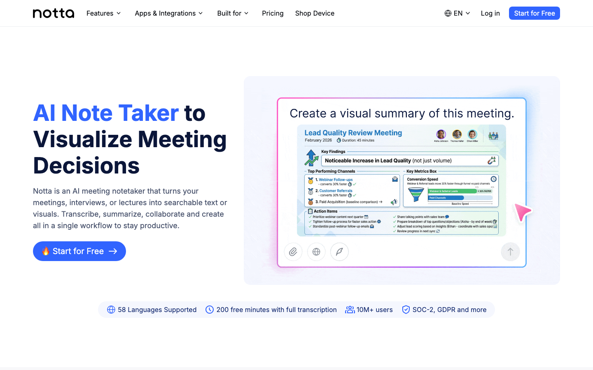
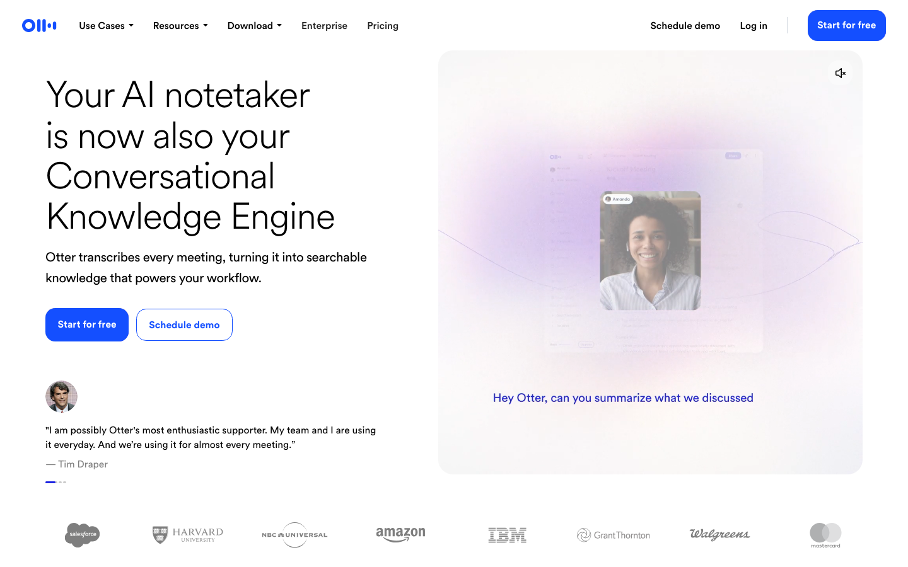
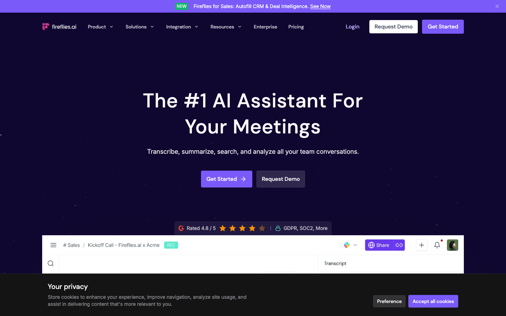
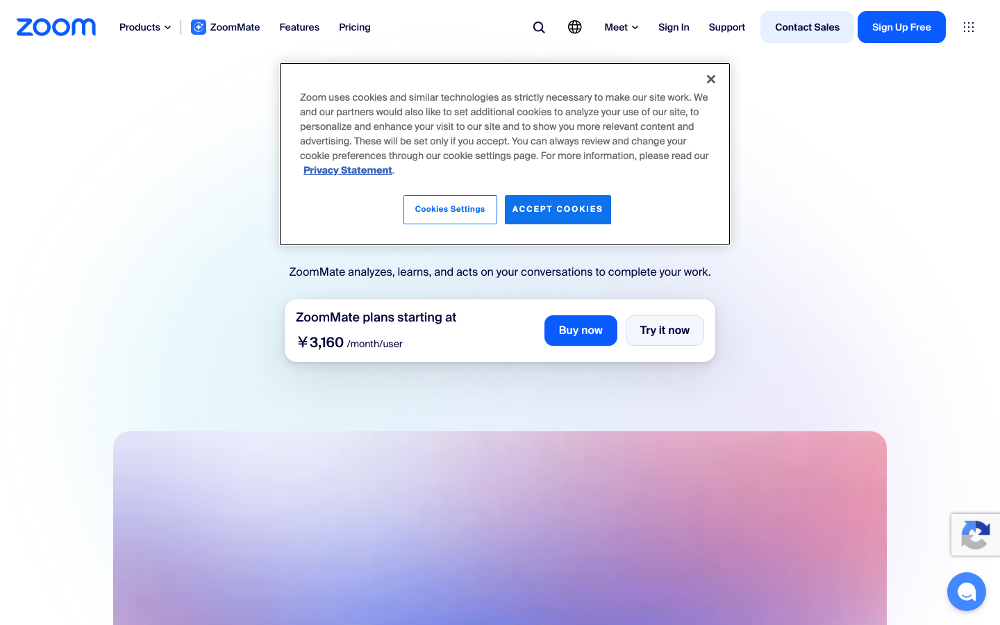

MEETING NOTES / 比較ガイド
AI議事録ツール比較｜Notta・Otter・Fireflies・Zoom【2026年】
議事録ツールは文字起こしの精度だけでなく、日本語対応、録音方法、要約、AI credits、保存量、共有のしやすさで差が出ます。公式料金と国内外レビューを照合し、会議後の仕事が減る選び方をまとめます。
- 月額、文字起こし分数、保存量、AI creditsを同じ表で比較
- G2・Capterra・海外レビュー・日本語製品情報の傾向を分けて記載
- 会議の言語と参加方式で第一候補を絞り、会議後の共有まで判断
料金・usage・コスパ比較（2026年7月31日時点）
同じ「1時間の会議」でも、保存できる分数とAI処理の回数は別枠です。表では公式ページに表示された請求額、録音・アップロード枠、保存量、AI creditsを分けて記載します。
比較シナリオ：1時間の会議を月20回、参加者が要約とアクションを共有する運用を基準にしました。日本語の録音分数ならNotta、英語会議の共同編集ならOtter、会議を横断して保存・検索するならFireflies、会議基盤をZoomに統一しているならZoom AI Companionがコスパを出しやすい結論です。
| サービス（公式） | 代表プランと月額 | 含まれるusage | 実効コスト | コスパの結論 |
|---|---|---|---|---|
| Notta | Free $0、Pro $13.49/月のG2表示、Businessはカスタム | Freeは120分/月・1会話3分・AI要約10回、Proは1,800分/月・1録音5時間・要約100回 | Proは約$0.0075/分（1,800分を使い切る場合） | 日本語会議を毎月多く処理するなら分数単価が低い |
| Otter.ai | Basic無料、Pro $16.99/月（年払い表示$8.49）、Business $30/月 | Basic 300分/月・ファイル取込3件、Pro 1,200分/月・ファイル10件、Businessは録音・取込無制限 | Pro月払い約$0.014/分 | 英語会議と共同編集を重ねるほど価値が出る |
| Fireflies.ai | Free $0、Pro $18/月または年払い$10、Business $29/月または年払い$19 | Freeは文字起こし・要約無制限、保存400分/チーム、AI credits 20。Proは保存8,000分/席 | Pro年払いは月$10で保存1分あたり約$0.00125 | 無料の文字起こし量と会話検索を重視するなら強い |
| Zoom AI Companion | Basic無料、Pro $15.99/月表示、AI Companionは対象有料プランに含む | Basicは会議40分、Proは会議30時間・10GBクラウド・会議中AI Companion無制限 | ProのAI要約単価は会議時間に依存し単純算定不可 | Zoomを既に使うなら追加ツール費なしで始めやすい |
NottaとOtterは録音分数、Firefliesは保存分数、Zoomは会議ライセンスが主な制約です。したがって「最安」は一つではなく、日本語会議の分数ならNotta、英語会議の保存と検索ならFireflies、Zoom利用中の追加費用ならZoomという結論になります。
4サービスの実力と口コミ

Notta：日本語・多言語の文字起こし
会議録音、文字起こし、要約、翻訳をまとめて扱えます。G2（4.4/5、234件）では速度・多言語・要約が好評で、無料枠の短さ、価格、雑音時の精度が不満として見られます。日本語の商談やインタビューを毎月処理する人には、Proの1,800分枠が分かりやすいです。

Otter.ai：英語会議と共同編集
リアルタイムのハイライト、コメント、AIチャット、CRM連携をまとめ、会議中から共同編集できます。G2/Capterraの評価は高く、英語の会議で検索と共有を重視するユーザーに支持されています。一方、日本語中心の利用では候補順位が下がり、無料枠はファイル取込3件に制限されます。

Fireflies.ai：保存・検索・連携
Zoom、Meet、Teamsなど複数の会議を自動記録し、会話検索やCRM連携まで進められます。G2では自動参加と要約、Capterraではタスク抽出が好評です。一方、レビューには固有名詞や発言の意味を誤るケース、AI creditsの追加購入が分かりにくいという声があります。文字起こし量を無料で確保したい人に強いサービスです。

Zoom AI Companion：会議ツールに内蔵
Zoomのホストが開始すると会議中の要約を作り、参加者へ共有できます。別ボットを会議へ呼ぶ工程を減らせることが最大の利点です。Capterraや海外ユーザーの声では、会議内の要約と検索は便利な一方、短いBasic会議では機能が限られ、他サービスのような横断的な議事録管理は弱いと評価されます。
強み・弱み比較表
| サービス | 強み | 弱み | 向く人 | 向かない人 |
|---|---|---|---|---|
| Notta | 日本語、多言語、長い録音、要約 | 無料枠、雑音時の精度、価格への不満 | 日本語商談・インタビュー | 英語の共同編集だけを求める人 |
| Otter.ai | 英語、リアルタイム共同編集、連携 | 日本語用途、無料の取込数 | 英語会議のチーム | 日本語の長時間会議が中心の人 |
| Fireflies.ai | 無料文字起こし、保存、検索、CRM | 誤認識、AI creditsの追加課金 | 会議を横断検索したい人 | 一回の会議だけを手軽に要約したい人 |
| Zoom AI Companion | Zoom内完結、対象有料プランに含む | Zoom外の会議、Basicの時間制限 | Zoom中心のチーム | 複数会議サービスを一つに集約したい人 |
用途別の決定ルール
Notta
日本語の音声を長時間処理し、要約と翻訳まで一つにしたい場合。
Otter
会議中の共同編集と、英語の会話検索を重視する場合。
Fireflies
Zoom・Meet・Teamsの会話を保存し、CRMへつなぎたい場合。
Zoom AI
別サービスを増やさず会議要約だけを使いたい場合。
毎月の日本語分数が多ければNotta、会話資産の検索と連携ならFireflies、Zoom以外を使わないならZoom、英語会議の共同編集ならOtterです。録音した会話を次のタスクへ渡すことが目的なら、文字起こしの量だけでなく、要約の形式と連携先を優先します。
自社の会議後業務へ最短経路で組み込む
議事録を作るだけでは、会議後の仕事は減りません。決定事項をタスク、商談メモ、社内ナレッジのどこへ渡すかを決め、選んだツールの出力形式とつなぎます。AI顧問室は、会議の種類と既存ツールを整理し、議事録から次の業務までを一つの流れに組み込みます。
- Notta料金 / Notta G2 / Notta日本語公式
- Otter料金 / Otter独立レビュー
- Fireflies料金 / Fireflies G2 / Fireflies Capterra
- Zoom料金 / Zoom日本語製品ページ / Zoom AI Companion Capterra
価格・利用量・レビューは2026年7月31日に取得しました。
よくある質問
無料枠で日本語会議を試すなら？
Nottaは月120分、Firefliesは文字起こしと要約が無制限、Zoom Basicは会議40分です。日本語の長い会議ならNotta、複数サービスの会議を保存するならFirefliesが入口です。
AI creditsを気にする必要はありますか？
FirefliesのAI creditsは要約や質問などの処理に使います。文字起こしだけなら無料枠でも量を確保できますが、会話分析を大量に使うとcreditsが先に減ります。
AI顧問室では何をしてくれますか？
会議の種類、出力先、既存ツールを整理し、議事録がタスクや顧客管理へ届く流れを設計します。